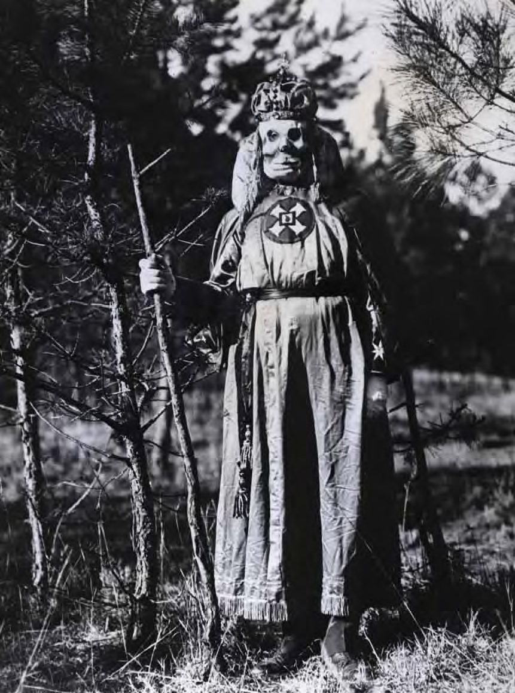

Part One
The bare facts about the birth of the Ku Klux Klan and its revival half a century later are baffling to most
people today. Little more than a year after it was founded, the secret society thundered across the war-torn
South, sabotaging Reconstruction governments and imposing a reign of terror and violence thatla sted three or
four years. And then as rapidly as it had spread, the Klan faded into the history books. After World War I, a
new version of the Klan sputtered to life and within a few years brought many parts of the nation under its
paralyzing grip of racism and blood shed. Then, having grown to be a major force for the second time, theKlan
again receded into the background. This time it never quite disappeared, but it never again commanded such
widespread support.
Today, it seems incredible that an organization so violent, so opposed to the American
principles of justice and equality, could twice in the nation’s history have held such power. How did the Ku
Klux Klan — one of the nation’s first terrorist groups — so instantly seize the South in the aftermath of the
Civil War? Why did it so quickly vanish? How could it have risen so rapidly to power in the 1920s and then so
rapidly have lost that power? And why is this ghost of the Civil War still haunting America today with hatred,
violence and sometimes death for its enemies and its own members?
The answers do not lie on the surface of American history. They are deeper than the events of the turbulent
1960s, the parades and cross burnings and lynchings of the 1920s, beyond even the Reconstruction era and the
Civil War. The story begins, really, on the frontier, where successive generations of Americans learned hard
lessons about survival. Those lessons produced some of the qualities of life for which the nation is most
admired — fierce individualism, enterprising inventiveness, and the freedom to be whatever a person wants and to
go wherever a new road leads.
But the frontier spirit included other traits as well, and one was a stubborn
insistence on the prerogative of “frontier justice” — an instant, private, very personal and often violent
method of settling differences without involving lawyers or courts. As the frontier was tamed and churches,
schools and courthouses replaced log trading posts, settlers substituted law and order for the older brand of
private justice. But there were always those who did not accept the change. The quest for personal justice or
revenge became a key motivation for many who later rode with the Ku Klux Klan, especially among those who were
poor and uneducated.
A more obvious explanation of the South’s widespread acceptance of the Klan is found in the institution of
slavery. freedom for slaves represented for many white Southerners a bitter defeat — a defeat not only of their
armies in the field but of their economic and social way of life. It was an ageold nightmare come true, for
early in Southern life whites in general and plantation owners in particular had begun to view the large number
of slaves living among them as a potential threat to their property and their lives.
A series of bloody slave revolts in Virginia and other parts of the South resulted in the widespread practice of
authorized night patrolscomposed of white men specially deputized for that purpose. White Southerners looked
upon these night patrols as
a civic duty, something akin to serving on a jury or in the militia. The mounted patrols, or regulators, as they
were called, prowled Southern roads, enforcing the curfew for slaves, looking for runaways, and guarding rural
areas against the threat of black uprisings. They were authorized by law to give a specific number of lashes to
any violators they caught. The memory of these legal night riders and their whips was still fresh in the minds
of both defeated Southerners and liberated blacks when the first Klansmen took to those same roads in 1866.
An even more immediate impetus for the Ku Klux Klan was the civil War itself and the reconstruction that
followed. When robed Klansmen were at their peak of power, alarmed Northerners justifiably saw in the Klan an
attempt of unrepentant confederates to win through terrorism what they had been unable to win on the
battlefield. Such a simple view did not totally explain the Klan’s sway over the South, but there is little
doubt that many a confederate veteran exchanged his rebel gray for the hoods and sheets of the Invisible
Empire.
Finally, and most importantly, there were the conditions Southerners were faced with immediately after the war.
Their cities, plantations and farms were ruined; they were impoverished and often hungry; there was an
occupation army in their midst; and reconstruction governments threatened to usurp the traditional white ruling
authority. In the first few months after the fighting ended, white Southerners had to contend with the losses of
life, property and, in their eyes, honor. The time was ripe for the Ku Klux Klan to ride.
the origin of the Ku Klux Klan was a carefully guarded secret for years, although there were many theories to
explain its beginnings. One popular notion held that the Ku Klux Klan was originally a secret order of Chinese
opium smugglers. Another claimed it was begun by Confederate prisoners during the war. the most ridiculous
theory attributed the name to some ancient Jewish document referring to the hebrews enslaved by the Egyptian
pharaohs.
In fact, the beginning of the Klan involved nothing so sinister, subversive or ancient as the
theories
supposed. it was the boredom of small-town life that led six young Confederate veterans to gather around a
fireplace one December evening in 1865 and form a social club. The place was Pulaski, Tenn., near the Alabama
border. When they reassembled a week later, the six young men were full of ideas for their new society. it would
be secret, to heighten the amusement of the thing, and the titles for the various offices were to have names as
preposterous-sounding as possible, partly for the fun of it and partly to avoid any military or political
implications.
Thus the head of the group was called the Grand Cyclops. His assistant was the Grand Magi.
There
was to be a Grand turk to greet all candidates for admission, a Grand Scribe to act as secretary, night hawks
for messengers and a Lictor to be the guard. the members, when the six young men found some to join, would be
called Ghouls. But what to name the society itself?
The founders were determined to come up with something unusual and mysterious. Being well-educated, they turned
to the Greek language. after tossing around a number of ideas, richard r. reed suggested the word “kuklos,” from
which the english words “circle” and “cycle” are derived. another member, Capt. John B. Kennedy, had an ear for
alliteration and added the word “”clan.” after tinkering with the sound for a while they settled on Ku Klux
Klan. the selection of the name, chance though it was, had a great deal to do with the Klan’s early success.
Something about the sound aroused curiosity and gave the fledgling club an immediate air of mystery, as did the
initials K.K.K., which were soon to take on such terrifying significance.
Soon after the founders named the
Klan, they decided to do a bit of showing off, and so disguised themselves in sheets and galloped their horses
through the quiet streets of tiny Pulaski. Their ride created such a stir that the men decided to adopt the
sheets as the official regalia of the Ku Klux Klan, and they added to the effect by donning grotesque masks and
tall pointed hats. They also performed elaborate initiation ceremonies for new members. Similar to the hazing
popular in college fraternities, the ceremony consisted of blindfolding the candidate, subjecting him to a
series of silly oaths and rough handling, and finally bringing him before a “royal altar” where he was to be
invested with a “royal crown.” the altar turned out to be a mirror and the crown two large donkey’s ears.
ridiculous though it sounds today, that was the high point of the earliest activities of the Ku Klux Klan.
Had
that been all there was to the Ku Klux Klan, it probably would have disappeared as quietly as it was born. But
at some point in early 1866, the club added new members from nearby towns and began to have a chilling effect on
local blacks. the intimidating night rides were soon the centerpiece of the hooded order: bands of white-sheeted
ghouls paid late night visits to black homes, admonishing the terrified occupants to behave themselves and
threatening more visits if they didn’t. it didn’t take long for the threats to be converted into violence
against blacks who insisted on exercising their new rights and freedom. Before its six founders realized what
had happened, the Ku Klux Klan had become something they may not have originally intended — something deadly
serious.
Robert E. Lee’s surrender was not fully nine
months past when six young ex-confederates met in a law office in December 1865 to form a secret club that they
called the Ku Klux Klan. From that beginning in the little town of Pulaski, Tennessee, their club began to grow.
Historians disagree on the intention of the six founders, but it is known that word quickly spread about a new
organization whose members met in secret and rode with their faces hidden, who practiced elaborate rituals and
initiation ceremonies.
Much of the Klan’s early reputation may have been based on almost frivolous mischief
and
tomfoolery At first, a favorite Klan tactic had been for a white-sheeted Klansman wearing a ghoulish mask to
ride up to a black family’s home at night and demand water. When the well bucket was offered, the Klansman would
gulp it down and demand more, having actually poured the water through a rubber tube that flowed into a leather
bottle concealed beneath his robe. After draining several buckets, the rider would exclaim that he had not had a
drink since he died on the battlefield at Shiloh. He then galloped into the night, leaving the impression that
ghosts of confederate dead were riding the countryside.
The presence of armed white men roving the
countryside
at night reminded many blacks of the pre-war slave patrols. The fact that Klansmen rode with their faces covered
intensified blacks’ suspicion and fear. In time, the mischief turned to violence. Whippings were used first, but
within months there were bloody clashes between Klansmen and blacks, Northerners who had come South, or Southern
unionists. from the start, however, there was also a sinister side to the Klan.
By the time the six Klan founders met in December
1865, the opening phase of reconstruction was nearly complete. All 11 of the former rebel states had been
rebuilt on astonishingly lenient terms which allowed
many of the ex-confederate leaders to return to positions of power. Southern state legislatures began enacting
laws that made it clear that the aristocrats who ran them intended to yield none of their pre-war power and
dominance over poor whites and especially over blacks. These laws became known as the Black codes and in some
cases amounted to a virtual re-enslavement of blacks.
In Louisiana, the Democratic convention resolved that
“we
hold this to be a Government of White People, made and to be perpetuated for the exclusive benefit of the White
race, and ... that the people of African descent cannot be considered as citizens of the United States.”
Mississippi and Florida, in particular, enacted vicious Black codes, other Southern states (except North
Carolina) passed somewhat less severe versions, and President Andrew Johnson did nothing to prevent them from
being enforced.
These laws and the hostility and violence that erupted against blacks and Union supporters
in
the South outraged Northerners who just a few months before had celebrated victory, not only over the
confederacy but its system of slavery as well. In protest of the defiant Black codes, congress refused to seat
the new Southern senators and representatives when it reconvened in December 1865 after a long recess. At the
moment the fledgling Klan was born in Pulaski, the stage was set for a showdown between Northerners determined
not to be cheated out of the fruits of their victory and die-hard Southerners who refused to give up their
supremacy over blacks.
Ironically, the increasingly violent activities of the Klan throughout 1866 helped
prove
the argument of radical republicans in the North, who wanted harsher measures taken against Southern governments
as part of their program to force equal treatment for blacks. Partly as a result of news reports of Klan
violence in the South, the radicals won overwhelming victories in the congressional elections of 1866. In early
1867, they made a fresh start at reconstruction. In March 1867, congress overrode President Johnson’s veto and
passed the reconstruction Acts, which abolished the ex-confederate state governments and divided 10 of the 11
former rebel states into military districts. The military governors of these districts were charged with
enrolling black voters and holding elections for new constitutional conventions in each of the 10 states, which
led to the creation of the radical reconstruction Southern governments.
The scholar Gladys-Marie Fry, who writes about slave patrols in her book, Night Riders in Black Folk History
(University of tennessee press, 1977),believes it was no accident that the early Klansmen chose white sheets for
their costumes. The following story was told to her by a black resident of Washington, D.C., who heard the story
from his ex- slave ancestors: “Back in those days they had little log cabins built around in a circle, around
for the slaves. and the log cabins, they dabbed between two logs, they dabbed it with some mortar. And of course
when that fall out, you could look out and see.
But every, most every night along about eight or nine o’clock, this overseer would get on his white horse and
put a sheet over him, and put tin cans to a rope and drag it around. and they told all the slaves, ‘now if you
poke your head out doors after a certain time, monster of a ghost will get you.’ they peeped through and see
that and never go out. they didn’t have to have any guards.” Fry said such disguises meant to scare slaves were
common and that the first Klansmen, knowing this, naturally chose similar uniforms, often embellishing them with
fake horns and paint around the lips and eyes.
Relying heavily on the oral testimony of contemporary blacks
whose parents or grandparents were slaves, Fry concludes that many slaves were superstitious, with real fears of
ghosts, “haints,” and the supernatural. But she said most slaves knew when white slave owners and patrollers
were trying to fool them. one ex-slave told a Federal writer’s project interviewer during the 1930s, “ha! ha!
dey jest talked ‘bout ghosts till i could hardly sleep at night, but the biggest thing in ghosts is somebody
‘guised up tryin’ to skeer you. ain’t no sich thing as ghosts.” another former slave reported, “Dey ghost dere —
we seed ‘em. Dey’s w’ite people wid a sheet on ‘em to scare de slaves offen de plantation.”
According to
Fry’s
research, slaves may have been frightened by the slave patrols, but they were far from defenseless. a common
trick of the patrollers was to dress in black except for white boots and a white hat, which did make a ghostly
sight when a group of them were riding along on a dark night. on one such occasion, however, slaves stretched
grapevines across the road at just the right height to strike a rider on horseback. The slave patrol came
galloping along and hit the grapevines; three patrollers were killed and several others injured. there were no
more mounted slave patrols for a long time afterwards in that county.
After the Civil war, when the Ku Klux
Klan
served the same purpose of controlling blacks as the slave patrols had, many whites (and later historians)
mistook the surface behavior of blacks for their genuine feelings. For blacks, Fry says, “appearing to believe
what whites wanted them to believe was a part of wearing the mask and playing the game ... in another instance,
on exslave who heard rumors of strange riders in his neighborhood went to his former master for information. The
master told him, ‘there are Ku Klux here; are you afraid they will get among you?’ the black said, ‘what sort of
men are they?’ the reply: ‘they are men who rise from the dead.’ according to the Congressional committee’s
report, this informant gave the matter considerable thought and rejected it. in his own words: ‘i studied about
it, but i did not believe it.’
“Fry continues, “it is significant that the early Klan made such great
efforts to
frighten and terrorize blacks through supernatural means. the whole rationale for psychological control based on
a fear of the supernatural was that whites were sure that they knew black people. they were not only firmly
convinced that black people were gullible and would literally believe anything, but they were equally sure that
blacks were an extremely superstitious people who had a fantastic belief in the supernatural interwoven into
their life, folklore, and religion.
“Such thinking had obvious flaws: the underestimation of black
intelligence
and the overvaluation of existing superstitious beliefs. Blacks were frightened, no doubt, but not of ghosts.
they were terrified of living, well-armed men who were extremely capable of making black people ghosts before
their time.”
In April 1867, a call went out for all known Ku Klux Klan chapters or dens to send representatives to Nashville,
Tenn., for a meeting that would plan, among other things, the Klan response to the new federal reconstruction
policy.
Throughout the summer and fall, the Klan had steadily become more violent. Thousands of the white
citizens of west Tennessee, northern Alabama and part of Georgia and Mississippi had by this time joined the
Klan. Many now viewed the escalating violence with growing alarm — not necessarily because they had sympathy for
the victims, but because the night riding was getting out of their control. Anyone
could put on a sheet and a mask and ride into the night to commit assault, robbery, rape, arson or murder. The
Klan was increasingly used as a cover for common crime or for personal revenge.
The Nashville Klan convention
was called to grapple with these problems by creating a chain of command and deciding just what sort of
organization the Klan would be. The meeting gave birth to the official philosophy of white supremacy as the
fundamental creed of the Ku Klux Klan. Throughout the summer of 1867 the Invisible empire changed, shedding the
antics that had brought laughter during its parades and other public appearances, and instead taking on the full
nature of a secret and powerful force with a sinister purpose.
All the now-familiar
tactics of the Klan date from this period —
the threats delivered to blacks, radicals and other enemies warning them to leave town; the night raids on
individuals they singled out for rougher treatment; and the mass demonstrations of masked and robed Klansmen
designed to cast their long shadow of fear over a troubled community.
By early 1868, stories about Klan
activities were appearing in newspapers nationwide, and reconstruction governors realized they faced nothing
less than an insurrection by a terrorist organization. Orders went out from state capitols and Union army
headquarters during the early months
of 1868 to suppress the Klan.
Few eras of United States history are as entangled in myth and legend as the period of 1865 to 1877, known as the
reconstruction. For the modern Klansman, this period of history is vitally important, and the retelling of the
events of those days is a basic element of Klan propaganda.
The Klan version of reconstruction goes like
this:
in the dark days immediately after the Civil war, Southerners were just beginning to pick up the pieces of their
shattered lives when an evil and profit-minded coalition of northern radical republicans, carpetbaggers and
Southern scalawags threw out legitimate Southern governments at bayonet point and began installing illiterate
blacks in state offices. worse, the conspirators aroused mobs of savage blacks to attack defenseless whites
while the South was helpless to do anything about it. the radicals pulling the strings behind the scenes stole
Southern state governments blind and sent them deeply into debt. after a few years of this, the Ku Klux Klan
arose, drove out the carpetbaggers and radicals and restored white Southerners to their rightful place in their
own land.
Like all legends and myths, this particular scenario starts out with a few grains of truth, but
winds
up being a romanticized story, a version of history that white Southerners in the late 1800s wanted very badly
to believe was true.
No events of this period illustrate the inaccuracy of the legend better than the race
riots
which occurred in Memphis and new orleans in the first half of 1866. In both cases, white city police attacked
groups of
blacks without provocation and killed scores of men, women and children with the help of armed white mobs behind
them. these were the worst incidents of white organized violence against blacks in that year, but by no means
the only ones.
The next phase of the story concerns the reconstruction governments that were installed in
1867
after Congress abolished the renegade governments formed by the ex-Confederate states immediately after the war.
Some of these newly formed governments were indeed corrupt and incompetent, as white supremacists maintain. But
historians who have studied these governments have found that often the
greatest beneficiaries of the corruption were aristocratic white Southerners.
One historian summed up the
radical governments this way: “Granting all their mistakes, the radical governments were by far the most
democratic the South had ever known. they were the only governments in Southern history to extend to negroes
complete civil and political equality, and to try to protect them in the enjoyment of the rights they were
granted.” and when these governments were replaced by all-white conservative governments, most of these rights
were stripped away from blacks and in some cases from poor whites as well.
The restoration of white
government
in the South was called “redemption,” and although there are many historical reasons for the change, it was a
development for which the Klan claimed credit, thereby placing the secret society in what it viewed the Klan was
romanticized as the South’s savior. as a heroic role in Southern history.
But it was too late. From middle Tennessee, the Klan quickly was established in nearby counties and then in North
and South Carolina. In some counties the Klan became the de facto law, an invisible government that state
officials could not control.
When Tennessee Governor William G. Brownlow attempted to plant spies within the
Klan, he found the organization knew as much about his efforts as he did. One Brownlow spy who tried to join the
Klan was found strung up in a tree, his feet just barely touching the ground. Later another spy was stripped and
mutilated, and a third was stuffed in a barrel in Nashville and rolled down a wharf and into the cumberland
river, where he drowned.
With the tacit sympathy and support of most white citizens often behind it, the Klan
worked behind a veil that was impossible for Brownlow and other reconstruction governors to pierce. But even
though a large majority of white Southerners opposed the radical state governments, not all of them approved of
the hooded order’s brand of vigilante justice. During its first year, the Klan’s public marches and parades were
sometimes hooted and jeered at by townspeople who looked upon them as a joke. Later, when the Klan began to use
guns and whips to make its point, some white newspaper editors, ministers and other civic leaders spoke out
against the violence.
But in the late 1860s, white Southern voices against the Klan were in the minority. One of
the Klan’s greatest strengths during this period was the large number of editors, ministers, former confederate
officers and political leaders who hid behind its sheets and guided its actions. Among them, none was more
widely respected in the South than the Klan’s reputed leader, General Nathan Bedford forrest, a legendary
confederate cavalry officer who settled in Tennessee and apparently joined the Klan fairly soon after it began
to make a name for itself. forrest became the Klan’s first imperial wizard, and in 1867 and 1868 there is little
doubt that he was its chief missionary, traveling over the South, establishing new chapters and quietly advising
its new members.
The ugly side of the Ku Klux Klan, the mutilations and floggings, lynchings and shootings,
began to spread across the South in 1868, and any words of caution that may have been expressed at the Nashville
meeting were submerged beneath a stream of bloody deeds.
As the violence escalated, it turned to general lawlessness, and some Klan groups even began fightingeach other.
In Nashville, a gang of outlaws who adopted the Klan disguise came to be known as the Black Ku Klux Klan. for
several months middle Confederate General nathan Bedford Forrest Tennessee was plagued by a guerrilla war
between the real and bogus Klans.
The Klan was also coming under increased attack by Congress and the
Reconstruction state governments. The leaders of the Klan thus realized that the order’s end was at hand, at
least as any sort of organized force to serve their interests. It is widely believed that Forrest ordered the
Klan disbanded in January 1869, but the surviving document is rather ambiguous. (Some historians think Forrest’s
“order” was just a trick so he could deny responsibility or knowledge of Klan atrocities.)
Whatever the actual
date, it is clear that as an organized, cohesive body across the South, the Ku Klux Klan had ceased to exist by
the end of 1869.
That did not end the violence, however, and as atrocities became more widespread, Radical
legislatures throughout the region began to pass very restrictive laws, impose martial law in some Klandominated
counties, and actively hunt Klan leaders.
In 1871, Congress held hearings on the Klan and passed a harsh anti-Klan law modeled after a North Carolina
statute. Under the new federal law, Southerners lost their jurisdiction over the crimes of assault, robbery and
murder, and the president was authorized to declare martial law and suspend the writ of habeas corpus.
Nightriding and the wearing of masks were expressly prohibited. Hundreds of Klansmen were arrested, but few
actually went to prison.
The laws probably dampened the enthusiasm for the Ku Klux Klan, but they can hardly be
credited with destroying the hooded order. By the mid 1870s, white Southerners didn’t need the Klan as much as
before because they had by that time retaken control of most Southern state governments. Klan terror had proven
very effective at keeping black voters away from the polls. Some black officeholders were hanged and many more
were brutally beaten. White Southern Democrats won elections easily and then passed laws taking away the rights
blacks had won during Reconstruction.
The result was an official system of segregation which was the law of the
land for more than 80 years. This system was called “separate but equal,” which was half true — everything was
separate, but nothing was equal.
During the last half of the 19th century, memories of the Ku Klux Klan’s brief grip on the South faded, and its
bloody deeds were forgotten by many whites who were once in sympathy with its cause. On the national scene, two
events served to set the stage for the Ku Klux Klan to be reborn early in the 20th century.
The first was
massive immigration, bringing some 23 million people from Great Britain, Germany, Italy, Hungary, and Russia and
a great cry of opposition from some Americans. The American Protective Association, organized in 1887, reflected
the attitude of many Americans who believed that the nation was being swamped by alien people. This
organization, a secret, oathbound group, was especially strong in the Middle West, where the reborn Ku Klux Klan
would later draw much of its strength.
The other major event which prepared the ground for the Klan’s return was
World War I, which had a wrenching, unsettling effect on the nation. On the European battlefields, white
Americans again were exposed to unrestrained bloodshed while blacks served in the uniform of their country and
saw open up before them a new world. Back at home, Americans learned suspicion, hatred and distrust of anything
alien, a sentiment which led to the rejection of President Woodrow Wilson’s League of Nations.
In the South, yet
another series of events occurred which helped breathe life into the Klan several decades later. In the 1890s,
an agrarian Populist movement tried to build a coalition of blacks and poor whites against the mill owners,
large landholders and conservative elite of the Old South. The aristocracy responded with the old cry of white
supremacy and the manipulation of black votes. As a result, the Populists were substantially turned back in
every Deep South state except Georgia and North Carolina. A feeling spread across the South, shared by both the
aristocracy and many poor whites, that blacks had to be frozen out of society.
The 1890s marked the beginning of
efforts in the Deep South to deny political, social and economic power to blacks. Most segregation and
disenfranchisement laws date from that period. It was also the beginning of a series of lynchings of blacks by
white mobs. The combination of legalized racism and the constant threat of violence eventually led to a major
black migration to Northern cities.
